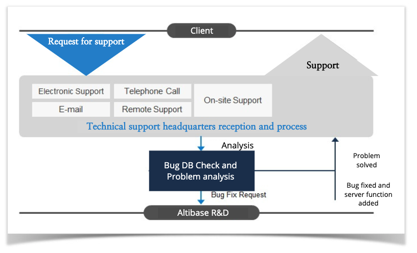

Technical Support System
Altibase has its technical support system for (24x7) non-stop service for users with a maintenance contract as follows.

Altibase operates the following website for users to fully understand and use our products.
From http://support.altibase.com/en/, users can receive and process technical support requests, remote support, the latest patch version, licenses, other Q&A, and technical documents.
Altibase trace log
Altibase trace logs are located in the "trc" directory among the subdirectories of the path where Altibase is installed ($ALTIBASE_HOME/trc).
| Major trace log file
| Description |
altibase_boot.log | This trace log file records the status of the Altibase server operation. The information recorded in this file includes details about the system information created when Altibase starts up and shuts down. |
| altibase_error.log | This trace log file records error messages created by the server. Also, when Altibase is abnormally terminated, the call stack of the Altibase process is recorded. |
| altibase_dump.log | This trace log file is a file in which working memory is dumped at the time When the Altibase is abnormally terminated. This trace log file is used to diagnose and debug errors in the Altibase program.
|
altibase_sm.log | These are files in which warning messages or trace messages created from the storage manager module are recorded. |
altibase_rp.log | These are files in which warning messages or trace messages created from the replication module are recorded.
|
altibase_qp.log | These are files in which warning messages or trace messages created from the query processing module are recorded.
|
| altibase_mm.log | These are files in which warning messages or trace messages created from the main module are recorded. |
| altibase_dk.log | These are files in which warning messages or trace messages created from the database link module are recorded. |
Basic items to be monitored by users
The basic items to monitored for users to operate Altibase are as follows.
Each command can be classified into two methods:
- Using the command of the OS
- Obtaining the information inside the DB with iSQL provided by Altibase
The part marked "Shell>" can be executed at the prompt in the user's account to obtain the result, and the part marked "iSQL>" executes iSQL to access the DB and executes the SQL statement to obtain information.
Monitoring item | Method | Analysis result
|
Existence of Altibase process | Shell> ps -ef | grep "altibase -p boot from" | grep -v grep | 1 or more
|
System free memory | vmstat or command to view memory usage by each OS | Surveillance to maintain 20% margin |
Altibase memory usage | SELECT SUM(MAX_TOTAL_SIZE) FROM V$MEMSTAT ; | Monitors of sudden increase compared to usual usage
|
Altibase memory DB allocation | SELECT TRUNC((MEM_ALLOC_PAGE_COUNT*32*1024)
/MEM_MAX_DB_SIZE*100.0, 2)
FROM V$DATABASE
;
| In the form of monitoring memory DB allocation, the occupancy rate does not exceed 90% |
System disk usage | Shell> df –k | Monitors the usage of directories used by Altibase and whether or not it increases sharply compared to the usual usage
|
Altibase disk DB allocation | SELECT A.NAME,
A.ALLOCATED_PAGE_COUNT,
SUM(B.MAXSIZE)
FROM V$TABLESPACES A,
V$DATAFILES B
WHERE A.ID = B.SPACEID
GROUP BY A.NAME,
A.ALLOCATED_PAGE_COUNT
;
| Monitors disk DB allocation Since only the currently allocated space is monitoring relative to the total availability, it is not actual usage. However, it is possible to determine whether to take additional actions when physical data files are insufficient.
|
Altibase trace log | Check for the existence of error messages beginning with "ERR-" | Take an action based on the severity of the ERR error |
| Monitors whether the following messages are periodically displayed in altibase_sm.log | Monitors the normal operation of the checkpoint and whether the log file is deleted normally, and if the number part is continuously displayed as None, it is necessary to check. |
Altibase replication status | SELECT REP_NAME,
REP_GAP
FROM V$REPGAP
;
| Monitors whether the REP_GAP item continues to increase |
{kind=link}